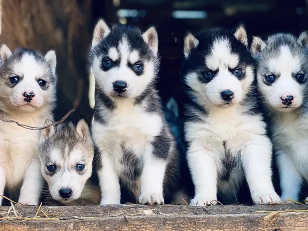
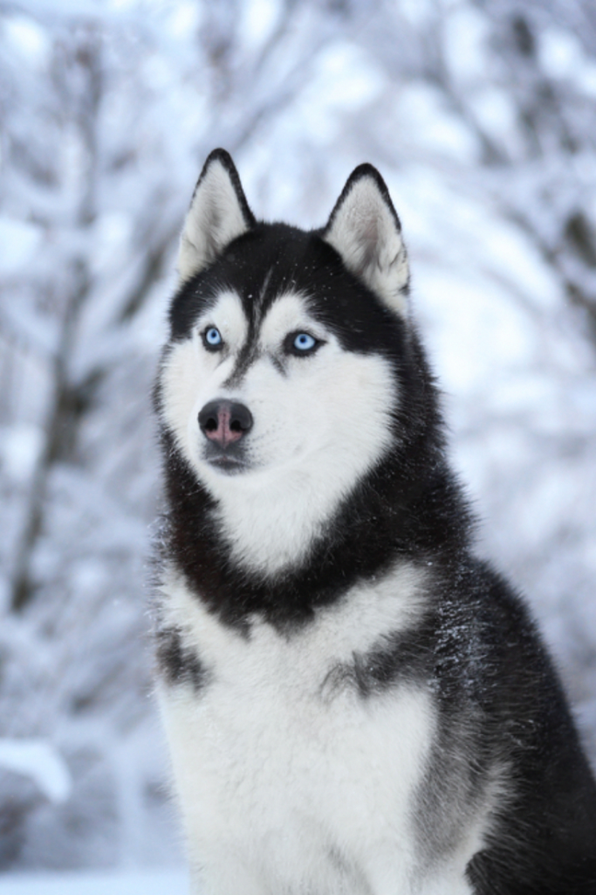
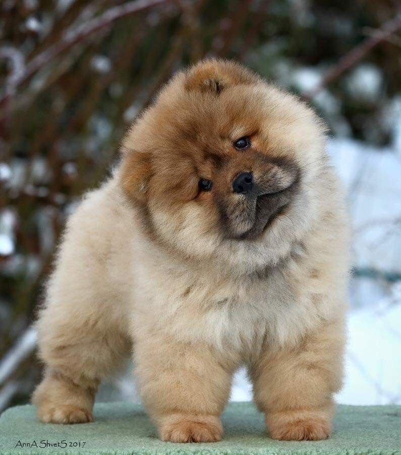
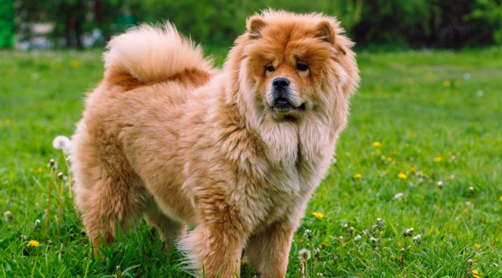
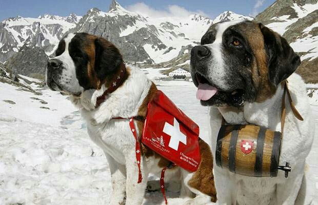
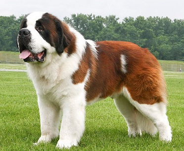
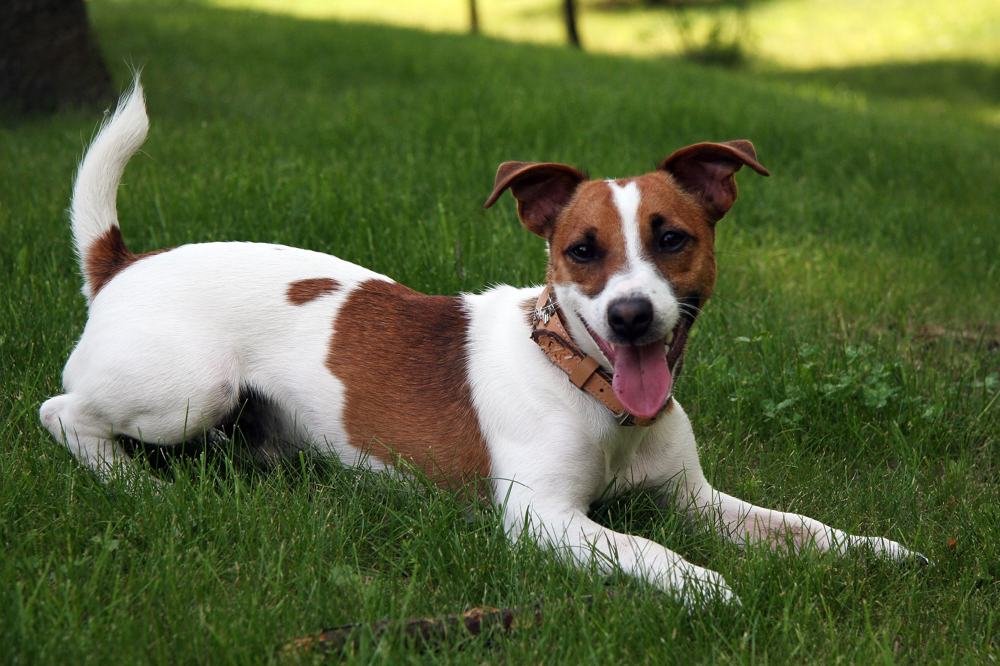
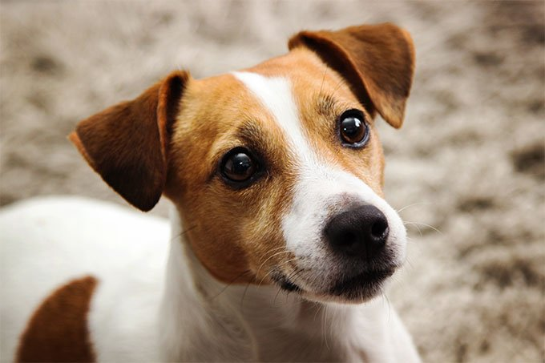

The German Shepherd (German: Deutscher Schäferhund) is a breed of medium to large-sized working dog that originated in Germany. According to the FCI,
the breed's English language name is German Shepherd Dog. The breed was officially known as the "Alsatian Wolf Dog" in the UK from after the First World War
until 1977 when its name was changed back to German Shepherd. Despite its wolf-like appearance, the German Shepherd is a relatively modern breed of dog, with their origin dating to 1899.

German Shepherds are moderately active dogs and are described in breed standards as self assured. The breed is marked by a willingness to learn and an eagerness
to have a purpose. They are curious, which makes them excellent guard dogs and suitable for search missions. They can become overprotective of their family and territory,
especially if not socialized correctly. They are not inclined to become immediate friends with strangers. German Shepherds are highly intelligent and obedient, as well as protective of their owners.

German Shepherds are a popular selection for use as working dogs. They are known for being easy to train and good for performing tasks and following instructions.
They are especially well known for their police work, being used for tracking criminals, patrolling troubled areas and detection and holding of suspects. Additionally,
thousands of German Shepherds have been used by the military. Usually trained for scout duty, they are used to warn soldiers to the presence of enemies or of booby traps
or other hazards. German Shepherds have also been trained by military groups to parachute from aircraft or as anti-tank weapons. They were used in World War II as messenger dogs,
rescue dogs and personal guard dogs. A number of these dogs were taken home by foreign servicemen, who were impressed by their intelligence.
A husky is a sled dog used in the polar regions. One can differentiate huskies from other dog types by their fast pulling-style. When used as a sled dog, they represent an ever-changing crossbreed
of the fastest dogs (the Alaskan Malamute, by contrast, pulled heavier loads at a slower speed). Humans use huskies in sled-dog racing.
Various companies have marketed tourist treks with dog sledges
for adventure travelers in snow regions. Huskies are also kept as pets, and groups work to find new pet homes for retired racing and adventure-trekking dogs.

Huskies are energetic and athletic. They usually have a thick double coat that can be gray, black, copper red, or white. The double coat generally protects huskies against harsh winters and,
contrary to what most believe, they can survive in hotter climates. During the hotter climates, huskies tend to shed their undercoat regularly to cool their bodies. In addition to shedding, huskies
control their eating habits based on the season; in cooler climates, they tend to eat generous amounts, causing their digestion to generate heat, whilst in warmer climates, they eat less.
Their eyes are typically pale blue, although they may also be brown, green, blue, yellow, or heterochromic. Huskies are more prone to some degree of uveitis than most other breeds.

Since many owners now have huskies as pets in settings that are not ideal for sledding, other activities have been found that are good for the dog and fun for the owner.
- Skijoring is an alternative to sled pulling, but mainly used in somewhat the same environment, as sledding with the exception that the owner (cross-country skier) does not need a full pack in order to participate.
- Dog hiking is an alternative for owners who live closer to woodland trails. The owner travels with their dogs along trails in the wilderness.
- Carting, also known as dryland mushing or sulky driving, is an urban alternative to dog sledding. Here, the dog can pull a cart that contains either supplies or an individual.
The Chow Chow is a dog breed originally from northern China. The Chow Chow is a sturdily built dog, square in profile, with a broad skull and small, triangular, erect ears with
rounded tips. The breed is known for a very dense double coat that is either smooth or rough:4–5 The fur is particularly thick in the neck area, giving it a distinctive ruff or mane appearance.
The coat may be shaded/self-red, black, blue, cinnamon/fawn, or cream.

The Chow Chow has been identified as a basal breed that predates the emergence of the modern breeds in the 19th Century. One writer proposed that the Chow Chow originated in China 2,000 years
ago or possibly originated in Arctic Asia 3,000 years ago and then migrated to Mongolia, Siberia, then to China. One Chinese legend mentions large war dogs from Central Asia that resembled
black-tongued lions. One Chinese ruler was said to own 5,000 Chows. The Chinese also used Chows to pull dog sleds, and this was remarked upon by Marco Polo.

Most commonly kept as pets, Chow Chows tend to display discernment of strangers and can become fiercely protective of their owners and property. The American Kennel Club standards,
however, consider an all-too aggressive or all-too timid Chow Chow to be unacceptable. For that reason, some owners have attributed a cat-like personality to the Chow Chow.Chow Chow are not
excessively active, meaning that they can be housed in an apartment. However, a Chow Chow living in an apartment will need daily exercise to prevent restlessness and boredom. Upon realizing
that exercise is a daily occurrence, Chow Chow will tend to be more assertive with owners in anticipation of such activities.
The St. Bernard or St Bernard is a breed of very large working dog from the Western Alps in Italy and Switzerland. They were originally bred for rescue work by the hospice
of the Great St Bernard Pass on the Italian-Swiss border. The hospice, built by and named after Italian monk Bernard of Menthon, acquired its first dogs between 1660 and 1670.
The breed has become famous through tales of Alpine rescues, as well as for its large size.

The St. Bernard is recognized internationally today as one of the molosser breeds. It is a giant dog. The coat can be either smooth or rough; the smooth coat being close and flat,
while the rough is dense, flat, and more profuse around the neck and legs. The colour is typically a red shade with white, or a mahogany brindle with white. Black shading is usually
found on the face and ears. The tail is long and heavy, hanging high. The eyes are usually brown, but sometimes can be icy blue, and should have naturally tight lids, with haws only slightly visible.

Known as a classic example of a gentle giant, the Saint Bernard is calm, patient and sweet with adults, and especially children. However St. Bernards, like all very large dogs, must be well socialized
with people and other dogs in order to prevent fearfulness and any possible aggression or territoriality. The biggest threat to small children is being accidentally knocked over by this breed's larger size.
Overall they are a gentle, loyal and affectionate breed, and if socialized are very friendly. Because of its large adult size, it is essential that proper training and socialization begin
while the St. Bernard is still a puppy, so as to avoid the difficulties that normally accompany training large dogs.
The Jack Russell Terrier is a small terrier that has its origins in fox hunting in England. It is principally white-bodied and smooth, rough or broken-coated and can be any colour.
Small tan and white terriers that technically belong to other breeds are sometimes known erroneously as "Jack Russells". Each breed has different physical
characteristics according to the standards of their national breed clubs; size and proportions are often used to tell them apart.

Due to their working nature, Jack Russell terriers remain much as they were some 200 years ago. They are sturdy, tough, and tenacious, measuring between 25–38 cm (10–15 in) at the withers,
and weigh 6–8 kg (14–18 lb). The body length must be in proportion to the height, and the dog should present a compact, balanced image. Predominantly white in coloration (more than 51%) with
black and/or brown and/or tan markings, they exhibit either a smooth, rough or a combination of both which is known as a broken coat. A broken-coated dog may have longer hair on the tail
or face than that which is seen on a smooth-coated dog. The skin can sometimes show a pattern of small black or brown spots, referred to as "ticking" that do not carry through to the outer coat.
All coat types should be dense double coats that are neither silky (in the case of smooth coats) nor woolly (in the case of rough coats).

Jack Russells are first and foremost a working terrier. Originally bred to bolt foxes from their dens during hunts, they are used on numerous ground-dwelling quarry such as groundhog, badger,
and red and grey fox. The working JRT is required to locate quarry in the earth, and then either bolt it or hold it in place until they are dug to. To accomplish this, the dog will
not bark but will expect attention to the quarry continuously. Because the preservation of this working ability is of highest importance to most registered JRTCA/JRTCGB breeders,
Jack Russells tend to be extremely intelligent, athletic, fearless, and vocal dogs.